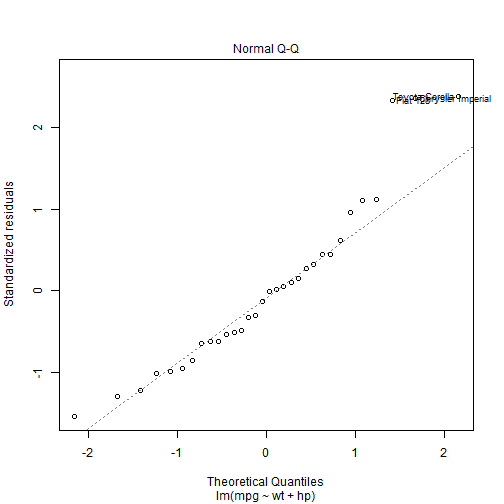
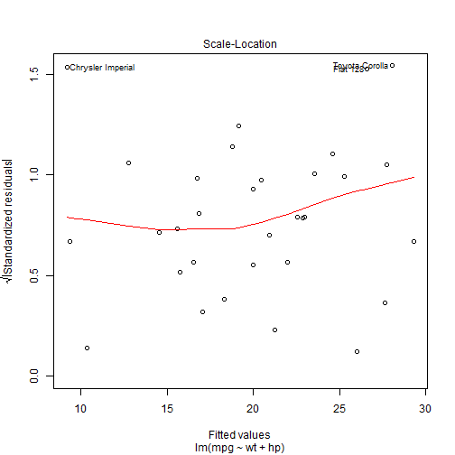
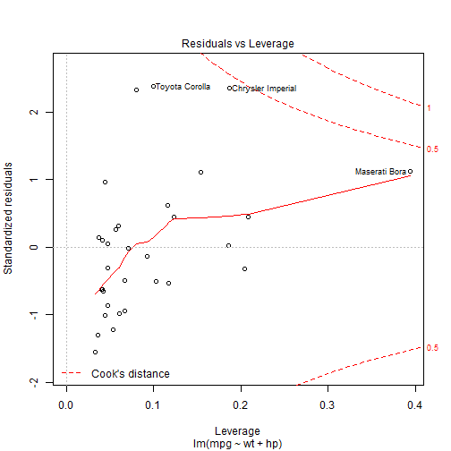
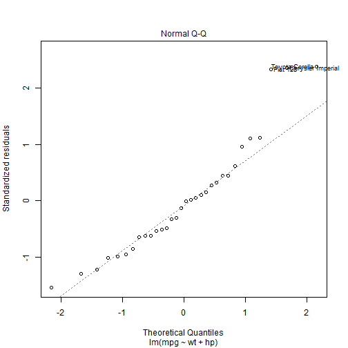
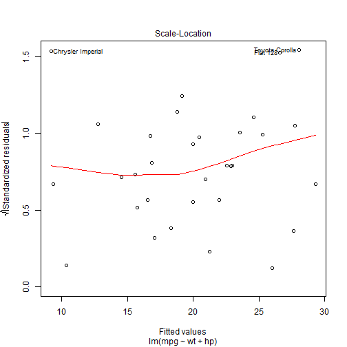
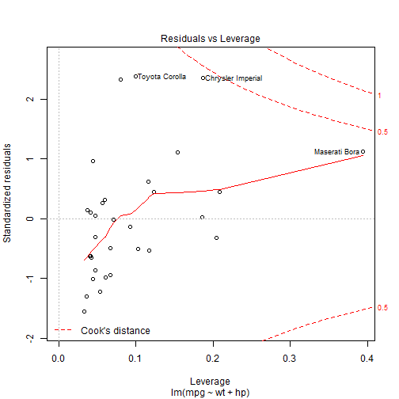

The dataset I've used to make the shiny app is mtcars. You can see a summary of dataset.
## mpg cyl disp hp drat
## Min. :10.40 4:11 Min. : 71.1 Min. : 52.0 Min. :2.760
## 1st Qu.:15.43 6: 7 1st Qu.:120.8 1st Qu.: 96.5 1st Qu.:3.080
## Median :19.20 8:14 Median :196.3 Median :123.0 Median :3.695
## Mean :20.09 Mean :230.7 Mean :146.7 Mean :3.597
## 3rd Qu.:22.80 3rd Qu.:326.0 3rd Qu.:180.0 3rd Qu.:3.920
## Max. :33.90 Max. :472.0 Max. :335.0 Max. :4.930
## wt qsec vs am gear carb
## Min. :1.513 Min. :14.50 0:18 0:19 3:15 1: 7
## 1st Qu.:2.581 1st Qu.:16.89 1:14 1:13 4:12 2:10
## Median :3.325 Median :17.71 5: 5 3: 3
## Mean :3.217 Mean :17.85 4:10
## 3rd Qu.:3.610 3rd Qu.:18.90 6: 1
## Max. :5.424 Max. :22.90 8: 1
   
  